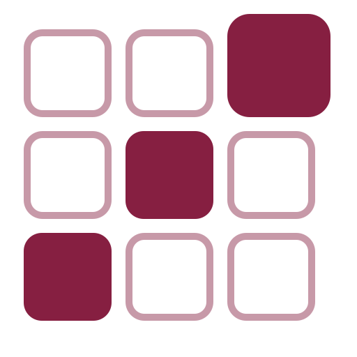
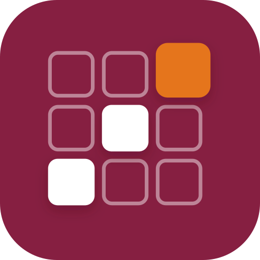
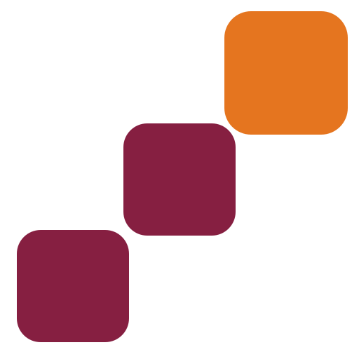
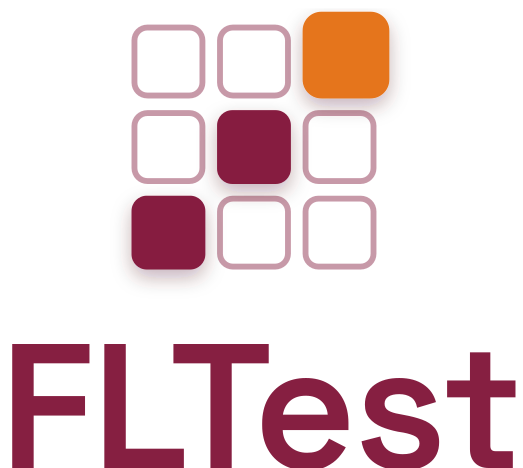
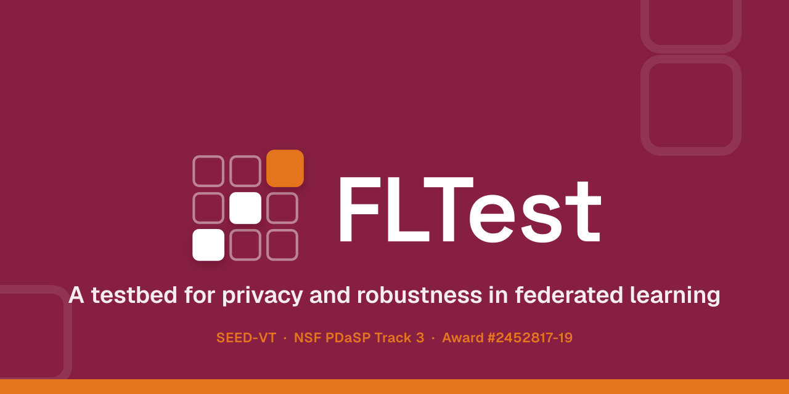

Brand kit — the Node Check mark, wordmark and lockups, the full color system, and drop-in
CSS. Rules and contrast measurements are in BRAND.md.
Light backgrounds.
fltest-mark.svg
Site header, dark slides.
fltest-mark-on-maroon.svg
Print, stamps, one-color output.
fltest-mark-mono-maroon.svg
Avatars, app icons, busy backgrounds.
fltest-tile-maroon.svgThe ring and satellite dots collapse below about 24 px, so the favicon variant drops them and thickens the strokes.


fltest-lockup-stacked.svg
| Token | Hex | Meaning |
|---|---|---|
| pass | #1F7A4C | test passed, defense held |
| fail | #B3261E | test failed, attack succeeded |
| warn | #E5751F | pitfall detected |
| info | #3B6EA5 | neutral run information |
| Pair | Ratio | Use |
|---|---|---|
| maroon.500 on white | 9.19 | anything |
| white on maroon.500 | 9.19 | anything |
| stone.800 on white | 16.40 | anything |
| stone.600 on white | 7.37 | anything |
| orange.700 on white | 6.14 | orange body text on light |
| orange.300 on maroon.500 | 4.81 | orange body text on maroon |
| orange.500 on white | 3.05 | 24 px+ or bold 19 px+ only |
| orange.500 on maroon.500 | 3.02 | large display only |
Differential testing across frameworks
Inter Display Bold for headlines, Inter for body.
Body copy at 16 px in stone.800. Links take maroon.500; the
accent is reserved for rules, badges, and the terminal node in the mark.
fltest run --config configs/backdoor.yaml --framework flower
theme:
name: material
logo: assets/logos/fltest-mark-on-maroon.svg
favicon: assets/logos/fltest-favicon.svg
palette:
- scheme: default
primary: custom
accent: custom
extra_css:
- stylesheets/brand.css